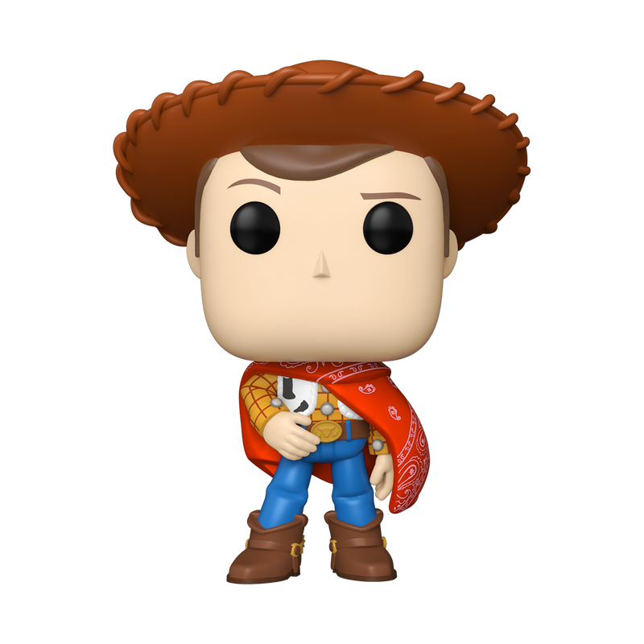

Sheriff Woody
¡La aventura nunca termina con un buen amigo! El Sheriff Woody, el querido vaquero de Toy Story, representa la amistad, la valentía y la lealtad. Una figura llena de nostalgia para pequeños y grandes coleccionistas.
Encuentra tus personajes favoritos y agrégalos a tu colección.

¡La aventura nunca termina con un buen amigo! El Sheriff Woody, el querido vaquero de Toy Story, representa la amistad, la valentía y la lealtad. Una figura llena de nostalgia para pequeños y grandes coleccionistas.